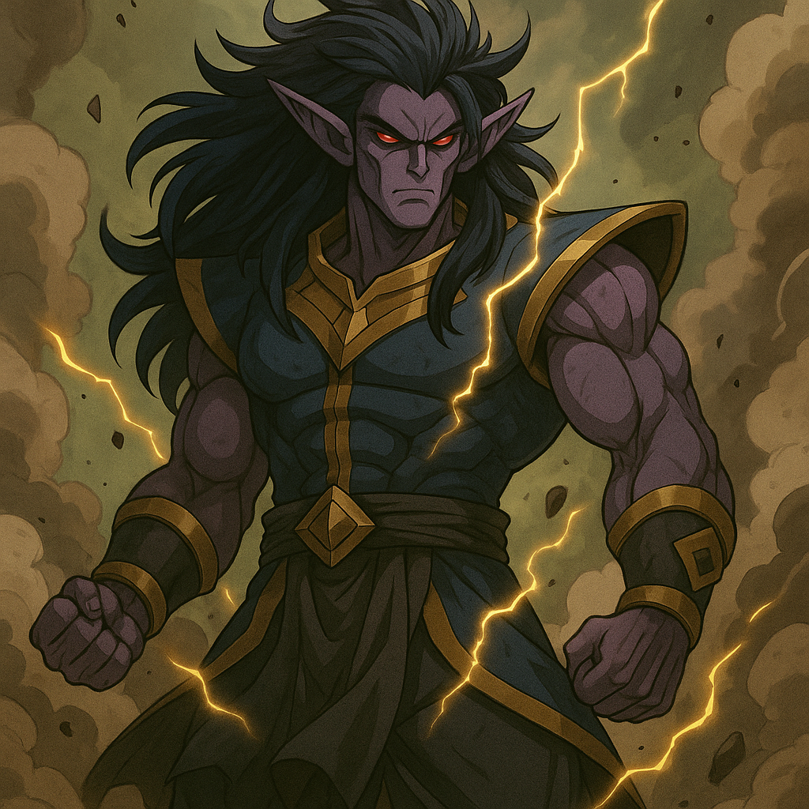

Vhar’Zor

Alias: The Incinerant
Age / Race / Role: 900+ / Infernal Myrthorian / Herald of Cataclysm
Appearance: Towering and volcanic, with obsidian skin cracked by lava veins, massive curved horns, and glowing orange eyes. His entire body radiates destructive heat.
Affinities & Energy Types: Forbidden Dark, Infernal Flame, Seismic Core
Threat Tier: S+ Rank
Core Stats (0–10 Scale)
• Strength: 10
• Speed: 7
• Durability: 10
• Energy Output: 10
• Combat Skill: 8
• Intelligence: 6
• Aura Pressure: 10
Signature Abilities
• Infernal Eruption
• Abyssfire Mantle
• Cataclysm Pulse
• Incinerant Vow
• Devourer’s Pyre (Ultimate)
Personality Summary
Fanatical and apocalyptic. He views destruction as divine will and sees fire as the ultimate purifier. Respects power and legacy but is loyal only to annihilation.
Faction or Allegiances: Order of the Abyss, Umbros’ Outer Circle, Myrthorian Lineage